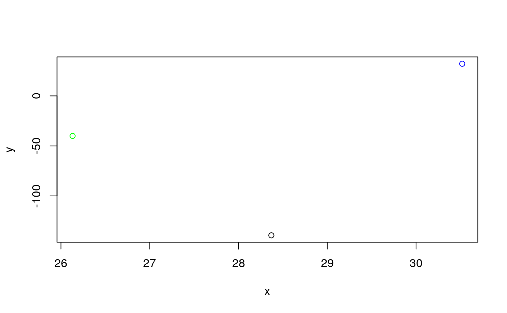
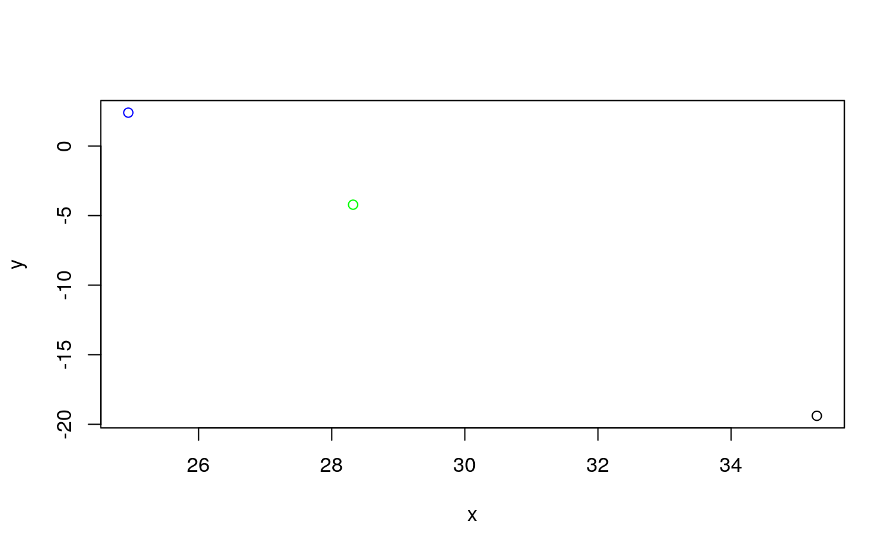
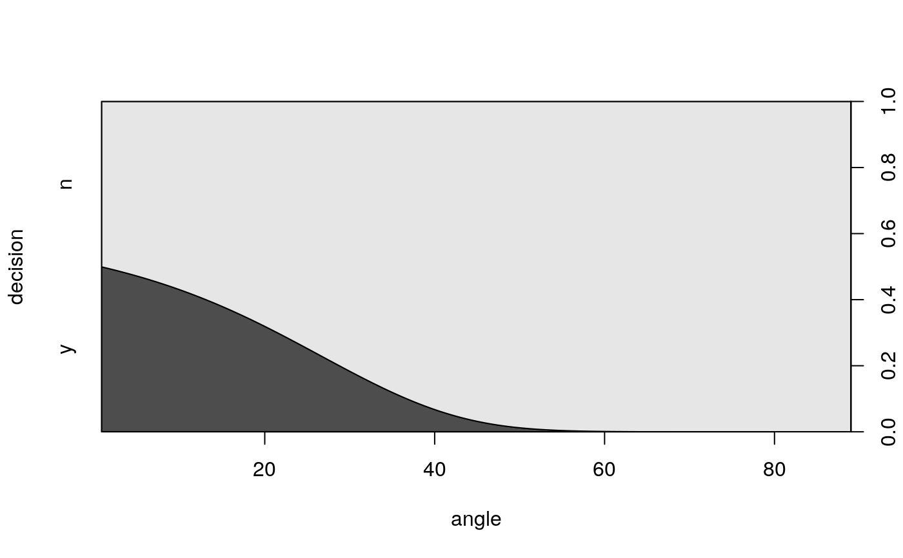

winklR.RdwinklR is a function to calculate the in the trajectory of the first
and the second derivatives maxima and minima of an amplification curve data
from a quantitative PCR experiment. For the determination of the angle, the
origin is the maximum of the first derivative. On this basis, the vectors to
the minimum and maximum of the second figure are determined. The vectors
result from the relation of the maximum of the first derivative to the
minimum of the second derivative and from the maximum of the first
derivative to the maximum of the second derivative. In a simple
trigonometric approach, the scalar product of the two vectors is formed
first. Then the absolute values are calculated and multiplied by each other.
Finally, the value is converted into an angle with the cosine. The
assumption is that flat (negative amplification curves) have a large angle
and sigmoid (positive amplification curves) have a smaller angle. Another
assumption is that this angle is independent of the rotation of the
amplification curve. This means that systematic off-sets, such as those
caused by incorrect background correction, are of no consequence.
The cycles to be analyzed is defined by the user.
The output contains the angle.
winklR(x, y, normalize = FALSE, preprocess = TRUE)
| x | is the cycle numbers (x-axis). By default the first ten cycles are removed. |
|---|---|
| y | is the cycle dependent fluorescence amplitude (y-axis). |
| normalize | is a logical parameter, which indicates if the amplification curve data should be normalized to the 99 percent percentile of the amplification curve. |
| preprocess | is a logical parameter, which indicates if the amplification curve data should be smoothed (Savitzky-Golay smoothing filter, useful for noisy, jagged data). |
# Calculate the angles for amplification curve data from the RAS002 data set data(RAS002) # Plot the data plot(RAS002[, 1], y = RAS002[, 2], xlab = "Cycle", ylab = "RFU", main = "RAS002 data set", lty = 1, type = "l" )res <- winklR(x = RAS002[, 1], y = RAS002[, 2]) res#> $angle #> [1] 2.00806 #> #> $origin #> x y #> origin 28.37007 -139.4272 #> #> $p1 #> x y #> p1 26.13105 -40.00269 #> #> $p2 #> x y #> p2 30.52 32.12933 #>plot(RAS002[, 1], y = RAS002[, 7], xlab = "Cycle", ylab = "RFU", main = "RAS002 data set", lty = 1, type = "l" )res <- winklR(x = RAS002[, 1], y = RAS002[, 7]) res#> $angle #> [1] 0.735405 #> #> $origin #> x y #> origin 35.28768 -19.39072 #> #> $p1 #> x y #> p1 28.32055 -4.216406 #> #> $p2 #> x y #> p2 24.9437 2.39646 #>res_angles <- unlist(lapply(2:21, function(i) { winklR(RAS002[, 1], RAS002[, i])$angle })) cdplot(RAS002_decisions[1L:20] ~ res_angles, xlab = "angle", ylab = "decision")